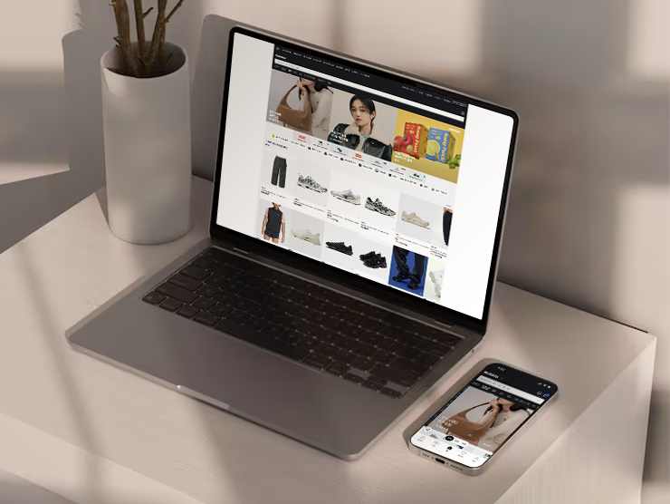

무신사

- Work.
- 회원/주문 파트 - UI 퍼블리싱 및 프론트엔드 개발
- Date.
- 2021.03 ~ 2025.12
- Cross Browsing.
- IE11, 파이어폭스, 크롬, 사파리
- Feature.
- PC & 모바일(하이브리드앱)
- 리액트 기반 프론트엔드 개발
- Detailed Tasks.
-
쿠폰 파트너 셀프 서비스 고도화 및 장바구니 쿠폰 참여형 시스템 구축
Work.파트너사가 직접 장바구니 쿠폰 프로모션을 신청·관리할 수 있는 셀프 서비스 프론트엔드 개발 및 관련 지면 UI/UX 개편
Date.2025.09 ~ 2025.10
Participation.100%
Achievements.
- MD가 수작업으로 진행하던 쿠폰 생성 업무를 시스템화하여, 쿠폰 생성 리소스를 개당 10분에서 0분으로 단축(총 5,000분 절감)하는 데 기여
- 브랜드의 자발적 참여 유도를 통해 연간 거래액 약 30억 원(기간 내 300억 원) 증대 및 참여 브랜드 수 3배 이상(150개 → 500개) 확대를 위한 기술적 기반 마련
-
장바구니 쿠폰 조건 검증 시스템 고도화 및 할인 혜택 자동 회수 로직 구현
Work.복잡하게 얽혀있던 쿠폰 검증 로직 재설계 및 부분 취소 시 차등 회수 로직 구현
Date.2025.08 ~ 2025.08
Participation.100%
Achievements.
- 부분 취소 시 허들 미달 여부와 귀책 주체(판매자/구매자)에 따른 차등 회수 로직을 구현하여 파트너사의 손해 방지 및 공정거래 이슈 선제적 대응
- 실질적인 재무적 비용 절감: 정책 도입 후 할인 비용 방어 효율을 43.1%까지 극대화하여 2025년 하반기에만 약 1억 8,620만 원의 비용 누수 차단
-
주문서 FE/BE 분리 및 React 전환
Work.주문서 영역의 레거시 구조(마크업 중심)를 React 기반 독립 애플리케이션으로 전환하고 FE/BE 개발 영역의 완전 분리
Date.2025.05 ~ 2025.07
Participation.30%
Achievements.
- 백엔드 의존성이 높았던 주문 로직을 프론트엔드로 이관하여 독립적인 운영 및 배포가 가능한 React 기반 아키텍처 수립
- 모듈화된 React 컴포넌트 설계를 통해 기능 단위의 유연한 확장 구조를 마련하고, 독립 운영을 통해 장애 전파 리스크 최소화 및 품질 안정성 확보
-
플러스배송(도착보장) 서비스 인지도 제고 및 전 지면 노출 고도화
Work.플러스배송 서비스 브랜딩 강화를 위한 전 지면 UI/UX 개편 및 탐색 편의성 개선을 위한 프론트엔드 최적화
Date.2025.06 ~ 2025.06
Participation.100%
Achievements.
- 검색 결과 내 '무배당발(무료 배송 당일 발송)' 필터의 접근성을 개선하여 필터 사용률을 기존 0.68%에서 1.28%로 약 88% 상승
- 플러스배송 전용 아이콘 및 캐치프레이즈(KV)를 주요 지면에 전략적으로 배치하여 서비스 인지도 제고 및 카테고리숍 내 상품 클릭율(CTR) 1.2%p 상승/li>
-
장바구니 쿠폰 발행기능 고도화
Work.장바구니 쿠폰 발행 조건 다각화에 따른 주문서 내 쿠폰 적용 UI 개발 및 대규모 트래픽 대응 최적화
Date.2025.05 ~ 2025.05
Participation.100%
Achievements.
- 브랜드, 카테고리, 브랜드별 비용 분담율 등 기획된 다각화 발행 조건을 주문서 내에 정확하게 매칭하고 시각화하는 프론트엔드 로직 구축
- 장바구니 쿠폰의 사용 편의성을 높이기 위해 영역별 인터랙션을 수정하고, 복잡한 할인 혜택이 사용자에게 직관적으로 전달되도록 UI 개선
-
무신사 2.0 PC UI/UX 최적화
Work.PC 채널 종료 후 발생하는 고객 이탈 및 매출 하락 대응을 위한 주문/결제 영역 PC 전용 UI/UX 설계 및 최적화
Date.2025.04 ~ 2025.04
Participation.100%
Achievements.
- 개편 후 PC 채널 방문자 수 약 13% 증가 및 전체 결제 금액 비중 1.57%p(157bps) 상승을 기록하며 하락하던 PC 매출 지표를 성공적으로 회복
- 1,500건 이상의 VoC를 분석하여 고레벨 고객(LV.5 이상)의 요구사항을 반영하고, 모바일 웹뷰 기반 구조를 유지하면서도 PC 환경에 최적화된 경량화 UI 적용
-
무신사 머니 상품권 및 선물하기 서비스 UI/UX 개발
Work.무신사 머니 상품권 판매 및 선물하기 서비스의 사용자 접점(Touch-point) UI 개발 및 전용 주문서 마크업 고도화
Date.2024.12 ~ 2024.12
Participation.100%
Achievements.
- 최신 가이드를 적용하여 결제 및 입력 폼(Form) 요소의 시각적 완성도를 높이고, 모바일/PC 환경에 최적화된 반응형 인터페이스 구축
- 선물하기 서비스 확장을 고려하여 주문서 내 주요 모듈을 컴포넌트화하고, 효율적인 CSS(SCSS) 구조 설계를 통해 개발 생산성 향상
-
무신사 2.0 클레임(취소·반품·교환) 시스템 전면 개편 및 React 전환
Work.클레임(취소/반품/교환) 요청·완료·철회 전 과정의 UI 개발 및 레거시 SSR 환경의 React SPA 전환
Date.2024.09 ~ 2024.12
Participation.30%
Achievements.
- BE Java 전환과 발맞추어 FE를 React로 완전히 재구축함으로써 기존 SSR 방식의 높은 백엔드 의존성을 해소하고 프론트엔드 독자 운영 기반 마련
- 취소/반품/교환 등 상황별로 세분화된 사유 선택 시스템을 구축하여 정확한 데이터 수집 및 클레임 처리 자동화 지원
-
맞춤 제작 상품 청약철회 프로세스 고도화 및 정책 UI 도입
Work.마킹 유니폼 등 맞춤 제작 상품의 청약철회 불가 안내 강화 및 주문 프로세스 내 법적 동의 수집 UI 개발
Date.2024.08 ~ 2024.09
Participation.100%
Achievements.
- 맞춤 제작 상품의 특성을 고려하여 상품 상세 페이지부터 주문서까지 '청약철회 불가' 안내를 시각적으로 강화하고 사용자의 오인지로 인한 클레임 발생 원천 차단
- 주문서(Checkout) 단계에서 맞춤 제작 상품 전용 청약철회 제한 동의 섹션을 신설하여, 법적 근거가 되는 명시적 동의 수집 프로세스 구축
-
무신사 2.0 회원 혜택 구축 및 UI/UX 고도화
Work.무신사 2.0 개편에 따른 '나의 혜택' 및 '등급 혜택 안내' 서비스의 프론트엔드 개발 및 리액트 전환.
Date.2024.04 ~ 2024.05
Participation.100%
Achievements.
- 혜택 페이지 진입 경로 최적화 및 일원화된 정보 배치를 통해 마이페이지 대비 전환율을 기존 5.1%에서 8.2%로 310bps 상승
- '혜택 인지 저하'라는 고객 Survey 결과에 대응하여 본인의 등급과 혜택 총량을 명확히 인지할 수 있는 인터페이스를 설계하여 방문자 수 약 37% 증가 견인
-
무신사 2.0 포인트·적립금 통합 관리 구축 및 UI 최신화
Work.등급제 개편 및 포인트 정책 종료에 따른 '적립금' 서비스의 전면 재설계 및 프론트엔드 React 전환 개발
Date.2024.03 ~ 2024.04
Participation.100%
Achievements.
- 기존에 누락되었던 GA4 및 앰플리튜드(Amplitude) 로그 적재 로직을 구현하여, 적립금 서비스 이용 행태 분석 및 지표 기반의 운영 환경 마련
- 포인트 정책 종료(Fade-out)에 맞춘 레거시 콘텐츠 제거 및 적립금 중심의 직관적인 정보 구조(IA) 재정립
-
무신사 2.0 마이사이즈 React 전환 및 UI/UX 고도화
Work.무신사 시스템 2.0 프로젝트의 일환으로 기존 SSR 기반의 사이즈/뷰티 정보 페이지를 React로 전환하고 전반적인 사용자 인터페이스 고도화 주도
Date.2023.12 ~ 2023.12
Participation.100%
Achievements.
- 모바일 대비 취약했던 PC 영역의 레이아웃 및 사용성 개선안을 PM·디자이너에게 직접 제시하고 반영하여 플랫폼 간 사용자 경험(UX) 격차 해소
- 레거시 환경에서 최신 프론트엔드 스택으로의 안정적인 이관을 완료하여, 일 평균 PV 약 1.5만 건 이상의 대규모 트래픽을 안정적으로 수용
-
무신사 신규 고객 확보(첫 구매 혜택) 인터페이스 고도화 및 그로스 최적화
Work.신규 회원 유입 확대 및 첫 구매 전환율 향상을 위한 웰컴 페이지 고도화 작업과 마케팅 퍼포먼스 지원 UI 개발
Date.2023.08 ~ 2023.09
Participation.100%
Achievements.
- 상품 추천 구좌 및 콘텐츠 강화를 위한 전용 컴포넌트를 설계하고, A/B 테스트를 직접 수행하여 클릭률(CTR) 및 구매 전환율(CVR) 지표 기반의 최적 UI 도출
- 토스(Toss) 리워드 등 제휴 광고 유입 회원을 식별하여 전용 혜택을 노출하는 조건별 UI 로직을 구축함으로써, 당일 첫 구매 전환율을 전월 대비 9.3% 향상시키는 데 기여
-
마이페이지 회원혜택 React 전환 및 운영 효율화
Work.기존 백엔드(Server-Side) 관리 영역의 회원혜택 페이지를 React 기반으로 전환하여 개발 직군 간 의존성 제거 및 프론트엔드 운영 독립성 확보
Date.2023.08 ~ 2023.08
Participation.100%
Achievements.
- 문서화되지 않은 기존 SSR 소스 코드를 직접 분석하여 기능적 동일성을 유지하면서 React 컴포넌트 구조로 완벽히 재설계(Refactoring)
- FE 별도 서버 구성을 통한 배포 프로세스 최적화 제안 및 이관 작업을 주도하여, 백엔드 리소스에 의존하지 않는 신속한 UI 업데이트 환경 마련
-
무신사 회원가입 시스템 UI/UX 전면 개편 및 가입 전환율 최적화
Work.회원가입 이탈률 감소 및 가입 프로세스 간소화를 위한 전체 UI/UX 개편 및 신규 인증 수단 통합 개발
Date.2023.04 ~ 2023.06
Participation.100%
Achievements.
- 가입 진입점 개선 및 플로우 최적화를 통해 기존 65.5%였던 전환율을 목표치(75%)를 크게 상회하는 93.3%로 끌어올리며 신규 회원 확보 극대화
- 중복 가입 확인 로직에 최적화된 인터페이스를 제공하여 사용자 혼선을 방지하고, 효율적인 인증 수단 배치로 운영 비용 절감에 기여
-
무신사 본인인증 시스템 UI/UX 고도화 및 개발 운영 환경 최적화
Work.토스(Toss) 본인인증 신규 도입 UI 개발 및 백엔드 의존성 분리를 통한 독립적인 프론트엔드 운영 환경 구축
Date.2023.04 ~ 2023.04
Participation.100%
Achievements.
- 본인인증 수단 다변화 및 UX 개선을 통해 연간 약 2억 원 규모의 인증 비용 중 20% 이상의 절감 기반 마련
- Lighthouse 리포트 기준 웹 접근성 준수율 90점 이상을 상시 유지하며, 지속적인 모니터링 및 분석을 통해 장애인·고령자 등 모든 사용자의 접근성 이슈 해결
-
무신사 서비스 보안성 강화 및 ISMS 인증 대비 개인정보 보호 정책 UI 개편
Work.광고성 정보 수신 및 개인정보 수집·이용 동의 절차의 법적 준거성을 확보하기 위한 프론트엔드 UI/UX 개편 수행
Date.2023.02 ~ 2023.03
Participation.100%
Achievements.
- 중요 약관 및 필수 동의 항목에 강조 서식을 적용하고, 명시적 동의 의사 확인을 위해 체크박스 디폴트 선택 해제 로직을 구현하는 등 투명한 개인정보 처리 프로세스 구축
- 개인정보 보호법령 및 ISMS(정보보호 관리체계) 심사 요건을 충족하는 UI를 구현하여, 브랜드 이미지 훼손 및 법적 규제 리스크를 선제적으로 방어
-
무신사·29CM·솔드아웃 통합 멤버십(TAG) 구축
Work.무신사 계열 3사 통합 멤버십 서비스인 'TAG 머니'의 전체 UI 개발 및 브랜드 경험(BX) 디자인 최적화 작업 수행
Date.2022.07 ~ 2022.12
Participation.50%
Achievements.
- 무신사, 29CM, 솔드아웃 등 각기 다른 서비스 환경에서도 통합 혜택을 직관적으로 이용할 수 있도록 공통 UI 컴포넌트 설계 및 정밀한 마크업 구현
- 적립금 전환, 통합 혜택 안내 등 복잡한 유저 플로우를 최신 UI 트렌드에 맞춰 개선하여 멤버십 활성화 및 마케팅 역량 강화 지원
-
무신사 파트너스 입점 시스템 UI/UX 고도화 및 운영 효율 개선
Work.무신사 파트너스 입점 프로세스의 혼선과 운영 비효율을 해결하기 위한 입점 안내 및 신청 페이지의 UI 전면 개편
Date.2022.04 ~ 2022.07
Participation.100%
Achievements.
- 복잡한 입점 신청 항목을 사용자의 입력 흐름에 맞춰 논리적으로 그룹핑하고, 공지 및 유의사항 안내 영역을 강화하여 불필요한 커뮤니케이션 비용 절감
- 입력 폼 최적화 및 유효성 강화: 카테고리 선택 및 입점 기준(SKU, 룩북 등) 확인 절차를 시각적으로 명확히 구현하여 입점 문의 처리의 정확도와 속도 개선
-
무신사 iOS 앱 소셜 로그인 인터페이스 재활성화 및 UI 개편
Work.iOS 앱 스토어 심사 기준(Human Interface Guidelines)에 부합하는 소셜 로그인(Apple/Kakao) UI 구축 및 긴급 대응을 통한 서비스 정상화 주도
Date.2022.04 ~ 2022.07
Participation.100%
Achievements.
- UI 개편 및 기능 재활성화 이후 카카오 로그인 사용량 50% 증가, 신규 가입자 수 36% 증가라는 명확한 정량적 성과 달성 (평균 성장률 대비 약 4배 이상의 성과)
- 서비스 오픈 후 단기간 내 전체 가입자의 약 4%에 해당하는 5만 명 이상의 Apple 계정 신규 가입자 유치 및 지속적인 가입 증가세 확인
-
무신사 글로벌 스토어 신규 구축
Work.글로벌 무신사 스토어 런칭을 위한 회원 서비스(회원가입, 마이페이지, 계정 찾기 등) 및 이메일 템플릿의 프론트엔드 UI 구축
Date.2022.01 ~ 2022.04
Participation.50%
Achievements.
- 다국어 대응 유연한 레이아웃 설계: 영어, 일본어 등 언어별 텍스트 길이 변화에 유연하게 대응하는 인터페이스 구조를 설계하여 글로벌 환경에서의 UI 일관성 유지
- 서버 사이드 렌더링 환경을 고려한 시맨틱 마크업을 통해 검색 엔진 최적화(SEO) 및 초기 진입 성능 향상 기여
-
무신사 스토어 UI/UX 고도화 및 공통 가이드 수립 프로젝트
Work.기존 레거시 코드를 Sass 및 BEM 방법론 기반의 신규 프레임워크로 전환하는 통합 퍼블리싱 작업 주도
Date.2021.03 ~ 2021.12
Participation.80%
Achievements.
- 노후화된 회원(가입/로그인/마이페이지) 및 주문/결제 프로세스의 시각적 요소를 개선하고 사용자 중심의 인터페이스로 재설계
- 웹 표준 및 웹 접근성을 엄격히 준수하여 전 브라우저 및 기기(PC/Mobile)에서의 인터페이스 최적화 구현